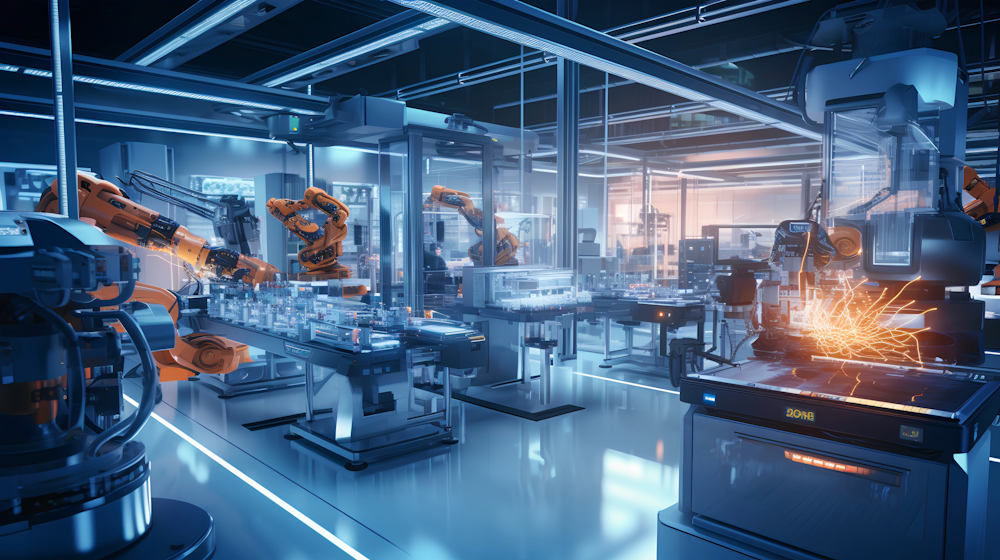

<!doctype html>
<html lang="en">
  <head>
    <!-- Required meta tags -->
    <meta charset="utf-8">
    <meta name="viewport" content="width=device-width, initial-scale=1">

    <!-- Bootstrap CSS -->
    <link href="https://cdn.jsdelivr.net/npm/bootstrap@5.0.2/dist/css/bootstrap.min.css" rel="stylesheet" integrity="sha384-EVSTQN3/azprG1Anm3QDgpJLIm9Nao0Yz1ztcQTwFspd3yD65VohhpuuCOmLASjC" crossorigin="anonymous">

     <!-- Font Google -->
     <link rel="preconnect" href="https://fonts.googleapis.com">
     <link rel="preconnect" href="https://fonts.gstatic.com" crossorigin>
     <link href="https://fonts.googleapis.com/css2?family=Poppins:ital,wght@400;500;0700&display=swap" rel="stylesheet">
     <link href="https://fonts.googleapis.com/css2?family=Lora:ital,wght@400;500;0700&display=swap" rel="stylesheet">
     <link href="https://fonts.googleapis.com/css2?family=Dancing+Script:wght@400;500;700&display=swap" rel="stylesheet">
     <link href="https://cdn.jsdelivr.net/npm/bootstrap@5.0.2/dist/css/bootstrap.min.css" rel="stylesheet">
     <script src="https://cdn.jsdelivr.net/npm/bootstrap@5.0.2/dist/js/bootstrap.bundle.min.js"></script>
     
         <!-- My Style -->
         <link rel="stylesheet" href="CSS/style.css"> 
     
         <!-- Logo -->
          <link rel="icon" href="real_estate_agent_24dp_FFFFFF_FILL0_wght400_GRAD0_opsz24.png" type="image/x-icon">

    <title style="font-family: 'Dancing Script', serif;">4-Future</title>
  </head>

  <script defer src="https://cdn.jsdelivr.net/npm/bootstrap@5.0.2/dist/js/bootstrap.bundle.min.js"></script>
  <script>
    document.addEventListener("DOMContentLoaded", function () {
      let sections = document.querySelectorAll("section");
      let navLinks = document.querySelectorAll(".navbar-nav .nav-link");
  
      window.addEventListener("scroll", function () {
        let scrollY = window.pageYOffset;
  
        sections.forEach((section) => {
          let sectionHeight = section.offsetHeight;
          let sectionTop = section.offsetTop - 80; // Sesuaikan dengan tinggi navbar
          let sectionId = section.getAttribute("id");
  
          if (scrollY >= sectionTop && scrollY < sectionTop + sectionHeight) {
            navLinks.forEach((link) => {
              link.classList.remove("active");
              if (link.getAttribute("href") === `#${sectionId}`) {
                link.classList.add("active");
              }
            });
          }
        });
      });
  
      // Efek bounce saat klik nav-item
      document.querySelectorAll(".nav-link").forEach((link) => {
        link.addEventListener("click", function () {
          this.style.animation = "bounce 0.4s ease";
          setTimeout(() => (this.style.animation = ""), 400);
        });
      });
    });
  </script>
  <script src="script.js">
    $(".nav-item .nav-link").on("click", function () {
  $(this).css("animation", "bounce 0.4s ease");
  setTimeout(() => $(this).css("animation", ""), 400);
});

  </script>
      
  </body>
  </html>

      <!-- Slider Container -->
      <div class="slider">
        <nav class="navbar navbar-expand-lg navbar-dark bg-dark fixed-top" style="height: min-content; opacity: 90%;">
          <div class="container mx-5">
            <a class="navbar-brand" href="#" style="font-family: 'Dancing Script', serif;">
              4-Future</a>
            <button class="navbar-toggler" type="button" data-bs-toggle="collapse" data-bs-target="#navbarNav">
              <span class="navbar-toggler-icon"></span>
            </button>
            <div class="collapse navbar-collapse" id="navbarNav">
              <ul class="navbar-nav mx-auto">
                <li class="nav-item mx-2 d-flex"><a class="nav-link" href="#hero">Home</a></li>
                <li class="nav-item mx-2 "><a class="nav-link" href="#latar">Latar Belakang</a></li>
                <li class="nav-item mx-2 "><a class="nav-link" href="#vm">Visi-Misi</a></li>
                <li class="nav-item mx-2 "><a class="nav-link" href="#affect">Dampak</a></li>
                <li class="nav-item mx-2 "><a class="nav-link" href="#trans">Jenis</a></li>
                <li class="nav-item mx-2"><a class="nav-link" href="#kesran">Kesimpulan-Saran</a></li>
              </ul>
            </div>
          </div>
        </nav>
      </div>
            

         <!-- Hero Section -->
         <section id="hero" class="slide" style="height: 100vh;">
          <div class="container h-100">
              <div class="row h-100">
                  <!-- Gambar Latar Belakang -->
                  

                  <div class="col-md-7 my-auto position-relative text-white">
                      <!-- Container untuk judul dan teks tambahan -->
                      <h1 class="h11 mt-2px">Revolusi Industri;</h1>
                      <h2 style="width: 100%; opacity: 70%; background-color: #6976AD;">Mesin-Mesin Berteknologi Tinggi dan Masa Depan Manufaktur</h2>
                      
                        <br>
                        <a href="#latar" class="btn btn-primary position-relative" style="width: 15%" >Next</a>
                        <hr>
                        <div class="d-block position-relative end-0" style="width: 100%; font-size: 20px;">Mengeksplorasi Mesin-Mesin Berteknologi Tinggi Beserta Peranan dan Efisiensi Teknologi dalam Mengubah Manufaktur</div></div> 
       
                  </div>
              </div>
          </div>
        </section>
      
        <!-- Title Section -->
        <section id="latar" class="slide">
            <div class="latar container h-100 d-flex align-items-center justify-content-center">
                <div class="text-center">
                    <h1 class="text1">Latar Belakang</h1>
                    <hr style="color: yellow; width: 40%;"  class="mx-auto">
                    <p style="text-align: justify; font-size: 24px; font-family: 'Lora', serif; font-weight: 400;" class="text2 mt-2">The development of advanced machinery is essential for enhancing the competitiveness of the advertising digital printing industry. The integration of high-resolution inkjet technology, artificial intelligence (AI), and direct-to-media printing not only enables high-quality and precise printing but also significantly boosts production efficiency. Clear evidence, such as the real-time monitoring facilitated by Internet of Things (IoT) integration, demonstrates that these technological advancements can dramatically optimize productivity and reduce errors. The advertising industry must adopt and continuously innovate with advanced machinery to deliver more personalized, eco-friendly, and competitive printing solutions in the global market. However, many people still do not fully understand the potential of high-tech machinery, and as a result, only a few recognize that technology should continuously evolve and innovate. This website has been created to provide the wider community with more knowledge about the various types of advanced machinery.</p>
                </div>
            </div>
        </section>

         <!-- Visi & Misi -->
        <section id="vm" class="vm slide" style="background: url('Cyber3.jpeg') no-repeat center center/cover; opacity: 55%; height: 100vh; display: flex; align-items: center; justify-content: center;">
          <div class="visi-misi-container">
              <div class="visi-misi">
                  <h2 style="font-family: 'Dancing Script', serif; font-weight: 700; font-size: 50px;">Visi & Misi</h2>
                  <p style="font-weight: 400;">Menyediakan informasi mengenai<br>mesin-mesin berteknologi tinggi.</p>
                  <span style="margin-top: 10px; font-weight: 400;">Menganalisis dampak teknologi<br>mesin di berbagai industri</span>
                  <p style="margin-top: 10px; font-weight: 400;">Memberikan panduan penggunaan<br>dan implementasi teknologi dalam<br>dunia nyata.</p>
              </div>

              <!-- Div Advanced Machine (Hidden by Default) -->
              <div class="advanced-machine">
                  <h2>"Advanced machine technology does not replace humans, but empowers them to achieve more."</h2>
              </div>
          </div>
        </section>

        <!-- Affect Section -->
         <section id="affect" class="affect slide" style="width: 100%; height: 100vh; background: url('Future\ Techno.jpg') no-repeat center center/cover;">
          <div class="text-center" style="width: 100%;">
            <div class="container-fluid h-100 d-flex align-items-center justify-content-center position-relative my-auto style="width: 100%;">
              <div class="container" style="height: 10vh; width: 100%;">
                <h style="font-size: 60px; color: rgb(255, 255, 255); font-weight: 700;">Dampak</h>
              </div>
            </div>
            <br>
            <div class="container-fluid h-100 d-flex align-items-center justify-content-center position-relative top-25" style="width: 100%;">
              <div class="container" style="height: 10vh; width: 100%;">
                <h style="font-size: 28px;">Kondisi Lingkungan</h>
              </div>
              <div class="container" style="height: 10vh; width: 100%; ">
                <h style="font-size: 28px;">Kualitas Peningkatan</h>
              </div>
              <div class="container" style="height: 10vh; width: 100%;">
                <h style="font-size: 28px;">Globalisasi & Persaingan</h>
              </div>
              <div class="container" style="height: 10vh; width: 100%; ">
                <h style="font-size: 28px;">Kondisi Lingkungan</h>
              </div>
            </div>
            <div class="container-fluid h-100 d-flex align-items-center justify-content-center position-relative top-25" style="color: black; width: 100%;">
              <div class="container" style="text-align: justify; font-size: 25px; font-weight: 400px; overflow: auto; height: 70vh; width: 100%; background-color: rgb(76, 78, 78); opacity: 80%; color: #fff;">
                <p>Teknologi industri memungkinkan otomatisasi dan pemrograman mesin, yang mempercepat proses produksi, mengurangi waktu henti, dan meningkatkan output. Penggunaan robotik dan perangkat lunak canggih memungkinkan produksi lebih cepat dan akurat.</p>
              </div>
              <div class="container" style="text-align: justify; font-size: 25px; font-weight: 400px; overflow: auto; height: 70vh; width: 100%; background-color: rgb(59, 84, 90); opacity: 80%; color: #fff;">    
                <p>Teknologi seperti pengendalian kualitas berbasis sensor dan analitik memungkinkan pengawasan kualitas yang lebih ketat dan peningkatan konsistensi produk. Hal ini mengurangi cacat produk dan meningkatkan kepuasan pelanggan.</p>
              </div>
              <div class="container" style="text-align: justify; font-size: 25px; font-weight: 400px; overflow: auto; height: 70vh; width: 100%; background-color: rgb(76, 78, 78); opacity: 80%; color: #fff;">            
                <p>Teknologi memungkinkan perusahaan untuk beroperasi secara global, menghubungkan pasar dan produksi secara lebih efisien. Hal ini meningkatkan persaingan di tingkat internasional karena perusahaan bisa mengakses pasar yang lebih luas dengan biaya lebih rendah.</p>
              </div>
              <div class="container" style="text-align: justify; font-size: 25px; font-weight: 400px; overflow: auto; height: 70vh; width: 100%; background-color: rgb(59, 84, 90); opacity: 80%; color: #fff;">
                <p>Teknologi dapat membantu mengurangi dampak lingkungan dengan memungkinkan penggunaan energi yang lebih efisien, pengurangan emisi, dan pengelolaan limbah yang lebih baik. Namun, ada juga risiko jika teknologi tidak digunakan dengan bijak, seperti peningkatan polusi atau limbah elektronik.</p>
              </div>
            </div>
          </div>
         </section>

         <style>
          html, body {
            height: 100%;
            margin: 0;
            padding: 0;
          }
        </style>
        
        <section id="trans" class="trans d-flex justify-content-center align-items-center" style="width: 100%; height: 100vh; background: url('Machine-Blue.png') no-repeat center center/cover;">
          <div class="slide container-fluid d-flex flex-column justify-content-center align-items-center">
            <a href="#isi1" class="btn btn-secondary mb-2" style="width: 20%; background-color: rgba(0, 0, 0, 0.6); color: white;">Printer UV Flatbed</a>
            <a href="#isi2" class="btn btn-secondary mb-2" style="width: 20%; background-color: rgba(0, 0, 0, 0.6); color: white;">Mesin Laser Cutting & Engraving</a>
            <a href="#isi3" class="btn btn-secondary mb-2" style="width: 20%; background-color: rgba(0, 0, 0, 0.6); color: white;">Printer Latex</a>
            <a href="#isi4" class="btn btn-secondary mb-2" style="width: 20%; background-color: rgba(0, 0, 0, 0.6); color: white;">Printer Sublimasi</a>
            <a href="#isi5" class="btn btn-secondary" style="width: 20%; background-color: rgba(0, 0, 0, 0.6); color: white;">Printer DTG</a>
          </div>
        </section>
        
        
       
        <section id="isi1" class="slide" style="height: 120vh;"> <!-- (/!--#--/) -->
          <div class="container-fluid h-100 d-flex align-items-center justify-content-center"
                style="background:linear-gradient( 0deg, #044d74, #01022b);">
            <div class="position-relative d-flex align-items-center justify-content-center" 
                 style="margin: 10px; z-index: 1; border-radius: 0%; width: 100%; height: 100%;">
              
              <div class="position-relative d-flex align-items-center justify-content-center uvp-container"
                 style="margin: 10px; z-index: 1; background: linear-gradient(180deg, rgb(66, 177, 167), rgb(212, 61, 61)); border-radius: 50%; width: 100%; max-width: 500px; height: 500px;">
                <h1 class="position-absolute" style="top: 50%; transform: translateY(-50%);"></h1>
                
              </div>
        
              <div class="gtw">
                <div class="container-fluid h-100 d-flex align-items-center justify-content-center position-relative top-50" 
                     style="width: 100%; max-width: 500px;"> <!-- (/!--#--/) -->
                  <div class="text-center container" 
                       style="height: 10vh; width: 100%; border-top: 2px solid; border-color: rgb(177, 235, 240); border-radius: 30px;">
                    <h style="font-size: 28px;">Printer UV Flatbed</h>
                  </div>
                </div>  
        
                <div class="container-fluid h-100 d-flex align-items-center justify-content-center position-relative top-50" 
                     style="color: #fff; width: 100%; max-width: 500px;"> <!-- (/!--#--/) -->
                  <div class="container text-center" 
                       style="font-size: 20px; font-weight: 400px; height: 70vh; width: 100%; max-width: 500px; background-color: transparent;"> <!-- (/!--#--/) -->
                    <p style="font-size: 20px; text-align: justify;">Printer UV Flatbed mencetak langsung ke berbagai permukaan seperti kayu, kaca, akrilik, dan logam menggunakan tinta yang dikeringkan dengan sinar UV. Hasil cetaknya tajam, tahan air, dan tidak memerlukan pelapisan tambahan. Cocok untuk signage, suvenir, dan dekorasi interior. Teknologi ini cepat, fleksibel, dan ideal untuk cetakan custom berkualitas tinggi. Mesin ini dapat digunakan sebagai casing HP custom, papan nama toko, hiasan dinding dari kaca/kayu, dan jam dinding custom.</p>
                    <a href="#trans" class="btn btn-secondary" style="width: 15%; background-color: rgba(0, 0, 0, 0.6); color: white;">Back</a>
                  </div>
                </div>
              </div> 
            </div>
          </div>
        </section>
        

        <section id="isi2" class="slide" style="height: 120vh;"> <!-- (/!--#--/) -->
          <div class="container-fluid h-100 d-flex align-items-center justify-content-center" 
               style="background: linear-gradient(0deg, #09748a, #044d74);">
            <div class="d-flex align-items-center justify-content-between" style="width: 90%; background-color: transparent;">
              
              <div class="text-center" style="background-color: transparent; width: 50%; padding-right: 30px;">
                <div class="container" style="border-top: 2px solid rgb(177, 235, 240); border-radius: 30px;">
                  <h2 style="font-size: 28px;">Mesin Laser Cutting & Engraving</h2>
                </div>
                <div class="container text-center" 
                     style="font-size: 20px; color: #ffffff; font-weight: 400; background-color: rgb(110, 110, 84); opacity: 60%; padding: 20px; border-radius: 15px;">
                  <p style="text-align: justify;">
                    Mesin ini menggunakan sinar laser untuk memotong atau mengukir bahan seperti akrilik, kayu, kaca, dan logam dengan presisi tinggi dalam bentuk yang sempurna, termasuk lingkaran. Cocok untuk plakat, suvenir, dan dekorasi dengan desain detail. Prosesnya cepat, tanpa kontak fisik, dan minim limbah. Teknologi ini ideal untuk personalisasi produk dalam berbagai industri. Mesin ini dapat digunakan untuk membuat gantungan kunci dari kayu/akrilik, plakat penghargaan, pajangan meja, kotak kayu hadiah, dan medali/tropi. 
                  </p>
                  <a href="#trans" class="btn btn-secondary" style="width: 15%; background-color: rgba(0, 0, 0, 0.6); color: white;">Back</a>
                </div>
              </div>
        
              <div class="d-flex align-items-center justify-content-center" style="width: 50%;">
                <div class="position-relative d-flex align-items-center justify-content-center" 
                     style="background: linear-gradient(180deg, rgb(240, 143, 203), rgb(213, 223, 123)); border-radius: 50%; width: 500px; height: 500px;">
                  
                </div>
              </div>
        
            </div>
          </div>
        </section>
        
        

        <section id="isi3" class="slide" style="height: 120vh; width: 100%;">
          <div class="container-fluid h-100 d-flex align-items-center justify-content-center" style="background: linear-gradient(0deg, #81adee, #09748a);">
            <div class="position-relative d-flex align-items-center justify-content-center" 
                 style="margin: 10px; z-index: 1; 
                        border-radius: 0%; width: 100%; height: 100%;">
              
              <div class="position-relative d-flex align-items-center justify-content-center" 
                   style="margin: 10px; z-index: 1; background: linear-gradient(180deg, rgb(66, 177, 167), rgb(212, 61, 61)); 
                          border-radius: 50%; width: 500px; height: 500px;">
                <h1 class="position-absolute" style="top: 50%; transform: translateY(-50%);"></h1>
                
              </div>
        
              <div class="gtw">
                <div class="container-fluid h-100 d-flex align-items-center justify-content-center position-relative top-25" 
                     style="width: 500px;">
                  <div class="text-center container" 
                       style="height: 10vh; width: 100%; border-top: 2px solid; border-color: rgb(177, 235, 240); border-radius: 30px;">
                    <h style="font-size: 28px;">Printer Latex</h>
                  </div>
                </div>  
        
                <div class="container-fluid h-100 d-flex align-items-center justify-content-center position-relative top-25" 
                     style="color: #fff; width: 500px">
                  <div class="container text-center" 
                       style="font-size: 24px; font-weight: 400px; height: 70vh; width: 500px; background-color: transparent;">
                    <p style="font-size: 20px; text-align: justify;">
                      Printer latex menggunakan tinta berbasis lateks dan air yang ramah lingkungan serta cepat kering. Digunakan untuk mencetak pada vinyl, kain, wallpaper, dan spanduk dengan hasil fleksibel dan tahan lama. Cocok untuk signage dan dekorasi interior. Hasil cetaknya tidak mudah retak atau pudar, bahkan dalam penggunaan jangka panjang. Mesin ini dapat digunakan untuk membuat spanduk/banner, wallpaper dinding, sticker mobil, poster promosi, dan label produk.
                    </p>
                    <a href="#trans" class="btn btn-secondary" style="width: 15%; background-color: rgba(0, 0, 0, 0.6); color: white;">Back</a>
                  </div>
                </div>
              </div> 
        
            </div>
          </div>
        </section>
        

        <section id="isi4" class="slide" style="height: 120vh;"> <!-- (/!--#--/) -->
          <div class="container-fluid h-100 d-flex align-items-center justify-content-center" 
               style="background: linear-gradient(0deg, #d6e2ee, #81adee);">
            <div class="d-flex align-items-center justify-content-between" style="width: 90%; background-color: transparent;">
              
              <div class="text-center" style="background-color: transparent; width: 50%; padding-right: 30px;">
                <div class="container" style="border-top: 2px solid rgb(177, 235, 240); border-radius: 30px;">
                  <h2 style="font-size: 28px;">Printer Sublimasi</h2>
                </div>
                <div class="container text-center" 
                     style="font-size: 20px; color: #000000; font-weight: 400; background-color: rgb(110, 110, 84); opacity: 60%; padding: 20px; border-radius: 15px;">
                  <p style="text-align: justify;">
                    Printer sublimasi menggunakan panas untuk mengubah tinta menjadi gas, yang menyerap ke dalam kain polyester atau bahan berlapis polimer. Hasil cetaknya tahan lama, tidak pudar, dan memiliki warna tajam. Umumnya digunakan untuk pakaian olahraga, merchandise, dan dekorasi. Cetakannya menyatu dengan bahan, sehingga tidak terasa di permukaan. Printer ini dapat digunakan untuk membuat jersey olahraga maupun goodie bag dan tote bag custom, membuat mug custom, bantal dan guling custom, juga masker kain custom.  
                  </p>
                  <a href="#trans" class="btn btn-secondary" style="width: 15%; background-color: rgba(0, 0, 0, 0.6); color: white;">Back</a>
                </div>
              </div>
        
              <div class="d-flex align-items-center justify-content-center" style="width: 50%;">
                <div class="position-relative d-flex align-items-center justify-content-center" 
                     style="background: linear-gradient(180deg, rgb(240, 143, 203), rgb(213, 223, 123)); border-radius: 50%; width: 500px; height: 500px;">
                  
                </div>
              </div>
        
            </div>
          </div>
        </section>
        
        
            </div>
          </div>
        </section>

        <section id="isi5" class="slide" style="height: 135vh; width: 100%;">
  <div class="container-fluid h-100 d-flex align-items-center justify-content-center" style="background:linear-gradient(0deg, #ffffff, #d6e2ee);">
    <div class="position-relative d-flex align-items-center justify-content-center" 
         style="margin: 10px; z-index: 1;; 
                border-radius: 0%; width: 100%; height: 100%;">
      
      <div class="position-relative d-flex align-items-center justify-content-center" 
           style="margin: 10px; z-index: 1; background:linear-gradient(180deg, rgb(66, 177, 167), rgb(212, 61, 61)); 
                  border-radius: 50%; width: 500px; height: 500px;">
        <h1 class="position-absolute" style="top: 50%; transform: translateY(-50%);"></h1>
        
      </div>

      <div class="gtw">
        <div class="container-fluid h-100 d-flex align-items-center justify-content-center position-relative top-25" 
             style="width: 500px;">
          <div class="text-center container" 
               style="height: 10vh; width: 100%; border-top: 2px solid; border-color: rgb(177, 235, 240); border-radius: 30px;">
            <h style="font-size: 28px; color: #000000;">Printer DTG</h>
          </div>
        </div>  

        <div class="container-fluid h-100 d-flex align-items-center justify-content-center position-relative top-25" 
             style="color: #000; width: 500px;">
          <div class="container text-center" 
               style="font-size: 24px; font-weight: 400px; height: 70vh; width: 500px; background-color: transparent;">
            <p style="font-size: 20px; color: #000; text-align: justify;">
              Printer DTG mencetak langsung ke kain dengan tinta berbasis air yang menyerap ke serat, menghasilkan warna cerah dan detail tinggi. Cocok untuk kaos katun dalam jumlah kecil atau satuan. Hasil cetaknya lembut, tidak pecah, dan tahan lama setelah dicuci. Teknologi ini lebih fleksibel dan ramah lingkungan dibandingkan sablon tradisional. Printer jenis ini memiliki fungsi yang kurang lebih sama dengan printer sublimasi, yakni untuk membuat kaos, hoodie, tote bag, dan sweater custom dengan gambar favorit.
            </p>
            <a href="#trans" class="btn btn-secondary" style="width: 15%; background-color: rgba(0, 0, 0, 0.6); color: white;">Back</a>
          </div>
        </div>
      </div> 

    </div>
  </div>
</section>


<section id="kesran" class="slide h-100vh">
  <div class="container-fluid" style="width: 100%; height: 100vh;">
    <div class="container-fluid d-flex flex-column justify-content-center align-items-center text-center" style="background-color: rgb(198, 203, 231); height: 40vh;">
      <h style="font-family: 'Dancing Script', serif;">Kesimpulan</h>
      <h style="font-size: 20px; font-weight: 500; width: 800px; text-align: justify;">
        Teknologi mesin canggih dalam digital printing telah meningkatkan kecepatan, presisi, dan efisiensi produksi, 
        memungkinkan pencetakan berkualitas tinggi di berbagai media. Integrasi AI dan IoT semakin mengoptimalkan 
        produktivitas, sementara inovasi berkelanjutan memungkinkan industri periklanan menawarkan solusi yang lebih 
        personal, ramah lingkungan, dan kompetitif.
      </h>
    </div>
    <div class="container-fluid d-flex flex-column justify-content-center align-items-center text-center" style="background-color: rgb(152, 153, 228); height: 60vh;">
      <h style="font-family: 'Dancing Script', serif;">Saran</h>
      <h style="font-size: 20px; font-weight: 500; width: 800px; text-align: justify;">
        Untuk mendukung perkembangan teknologi mesin canggih dan penerapannya dalam berbagai industri, diperlukan peran aktif 
        dari berbagai pihak. Pemerintah sebaiknya meningkatkan investasi dalam riset dan pengembangan (R&D) teknologi mesin. 
        Masyarakat dan pelaku industri perlu lebih aktif dalam memahami manfaat teknologi mesin dalam menciptakan peluang kerja 
        baru yang lebih inovatif. Pihak akademisi dan lembaga pendidikan diharapkan dapat mengembangkan kurikulum berbasis teknologi 
        dan membangun kerja sama dengan industri untuk mempercepat adopsi mesin canggih. Dengan adanya sinergi dari semua pihak, 
        tentu akan mempercepat kemajuan Indonesia di era digital dan otomatisasi.
      </h>
    </div>
  </div>
</section>

        
        
        
        


         <!-- Jenis -->

    <!-- Optional JavaScript; choose one of the two! -->

    <!-- Option 1: Bootstrap Bundle with Popper -->
    <script src="https://cdn.jsdelivr.net/npm/bootstrap@5.0.2/dist/js/bootstrap.bundle.min.js" integrity="sha384-MrcW6ZMFYlzcLA8Nl+NtUVF0sA7MsXsP1UyJoMp4YLEuNSfAP+JcXn/tWtIaxVXM" crossorigin="anonymous"></script>

    <!-- Option 2: Separate Popper and Bootstrap JS -->
    <!--
    <script src="https://cdn.jsdelivr.net/npm/@popperjs/core@2.9.2/dist/umd/popper.min.js" integrity="sha384-IQsoLXl5PILFhosVNubq5LC7Qb9DXgDA9i+tQ8Zj3iwWAwPtgFTxbJ8NT4GN1R8p" crossorigin="anonymous"></script>
    <script src="https://cdn.jsdelivr.net/npm/bootstrap@5.0.2/dist/js/bootstrap.min.js" integrity="sha384-cVKIPhGWiC2Al4u+LWgxfKTRIcfu0JTxR+EQDz/bgldoEyl4H0zUF0QKbrJ0EcQF" crossorigin="anonymous"></script>
    -->
  </body>
</html>